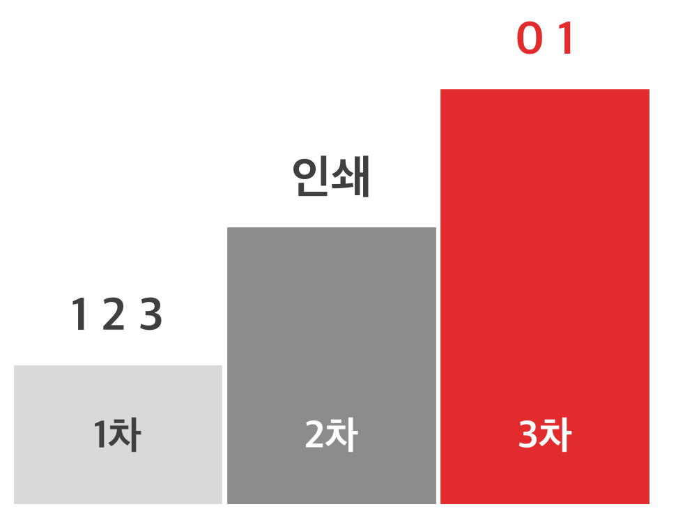
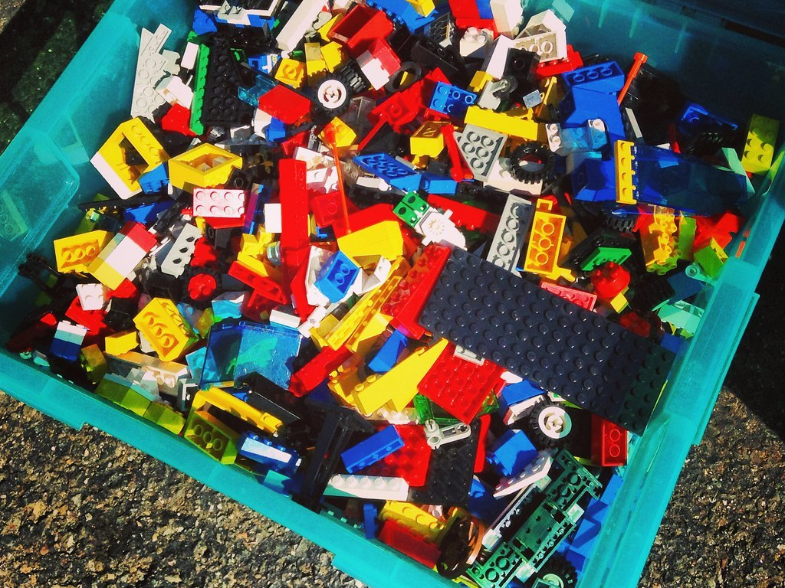
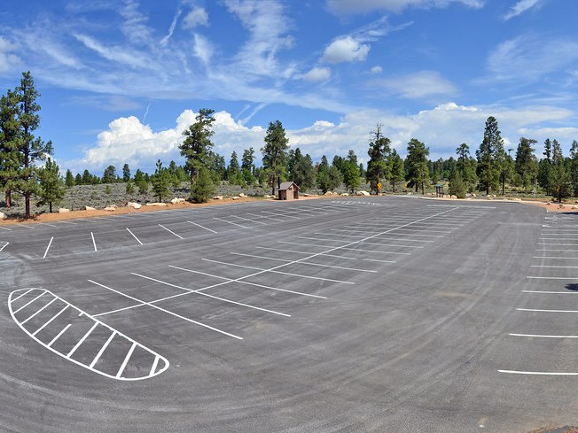

04
데이톨로지 — 데이터로 읽는 인간과 사회
3차 데이터 혁명과
보편언어 0·1
주교재: 김성태, 『데이톨로지』 1부 2장 · 강사 : ○○○

CONTENTS
3차 데이터
혁명과 0·1

학습 목표
목표 1
3차 데이터 혁명(아라비아 숫자 → 인쇄술 → 디지털 코드)의 의미 설명
목표 2
0의 발견·위치값 기수법·이진법이 디지털 문명의 토대가 된 과정 연표 정리
오늘의 질문
MCMLXXXIV × XLVII = ?
왜 이렇게 어려울까?
3차 데이터 혁명
저자가 본 인류 문명사의 세 번의 데이터 혁명
1차
아라비아 숫자
- 10개 기호로 모든 수
- 수를 적고 계산하는 보편언어
2차 · 15세기 중반
금속활판 인쇄술
- 구텐베르크
- 지식과 숫자 체계의 대량 복제·확산
3차 · 20세기
디지털 코드 0·1
- 모든 개념을 두 상태로
- 컴퓨터 문명의 토대
보편언어, 아라비아 숫자
[비유] 레고 블록

사진: JeepersMedia / CC BY 2.0
레고 블록 = 아라비아 숫자
- 몇 가지 블록으로 무엇이든 조립
- 10개 기호(0~9)로 모든 수 표현
- 세계 어디서나 같은 규칙 = 보편언어
- 조립 규칙이 단순할수록 계산도 쉬움
보편언어, 아라비아 숫자
같은 수, 다른 길이: 로마 숫자 vs 아라비아 숫자
0과 위치값 기수법
[비유] 빈 주차 칸

사진: Grand Canyon NPS / CC BY 2.0
빈 주차 칸 = 0
- 차가 없어도 칸은 그 자리에 존재
- 칸 번호 = 숫자의 자리(일·십·백)
- 0 = 비어 있는 자리를 지키는 표시
- 0이 있어야 205와 25가 구분
0과 위치값 기수법
위치값 기수법: 같은 숫자라도 자리에 따라 값이 달라지는 표기
숫자의 여행
[비유] 사막을 건너는 대상(隊商)
사진: Retlaw Snellac Photography / CC BY 2.0
대상 행렬 = 숫자의 전파
- 낙타가 비단·향신료를 실어 나르듯
- 문명에서 문명으로 숫자 체계 전달
- 인도 → 이슬람 → 유럽의 긴 여정
- 한 문명의 발명이 아닌 공동 작품
숫자의 여행
바빌로니아에서 구텐베르크까지, 0이 걸어온 길
숫자의 여행
0과 숫자의 연표
| BC 3000년경 | 바빌로니아: 빈자리를 표시하는 기호 (0의 원형) |
| BC 6세기 | 피타고라스: "만물은 수로 되어 있다" |
| 7세기 | 브라마굽타: 0을 실제 수로 정의, 연산 규칙 제시 |
| 820년대 | 알콰리즈미 『인도 숫자를 사용한 계산』 → '알고리즘'·'알지브라' 어원 |
| 976년 | 스페인 '비길라누스 코덱스': 서양 최초 아라비아 숫자 기록 |
| 1202년 | 피보나치 『산반서(Liber Abaci)』: 유럽에 소개 |
| 15세기 중반 | 구텐베르크 인쇄술: 확산 가속 |
| 1900년 | (한국) 이상설 『산술신서』: 아라비아 숫자 표기 |
이진법 0과 1
[비유] 전등 스위치
사진: Orange Steeler / CC BY 2.0
전등 스위치 = 비트(bit)
- 켜짐 = 1, 꺼짐 = 0, 두 상태뿐
- 스위치 3개 = 2×2×2 = 8가지 조합
- 스위치 8개 = 256가지 → 글자 하나
- 전기 회로와 딱 맞는 숫자 체계
이진법 0과 1
이진법(binary): 두 상태(0, 1)로 모든 수와 명제를 표현
이진법 0과 1
동서양 사상의 만남
1666년
라이프니츠
- 『조합술에 관하여』
- 모든 개념 = 기호의 조합
1700년 전후
주역 64괘
- 부베 신부의 편지
- 음양 괘와 이진법의 유사성 발견
19~20세기
불 대수 → 컴퓨터
- 조지 불: 참/거짓 = 1/0
- 위너의 사이버네틱스
활동
활동 (60분): 손으로 만나는 데이터 혁명
20분
이진법 이름 쓰기
- 이니셜을 문자 코드 → 이진수로
- 8칸 손팻말 만들기
15분
계산 대결
- 같은 곱셈을 로마·아라비아 숫자로
- 걸린 시간 비교
25분
연표 토론
- 디지털 혁명의 진짜 시작점은?
- 팀별로 한 지점 골라 변론
정리 및 확인 문제
오늘의 핵심 4줄
3차 데이터 혁명 = 아라비아 숫자 → 인쇄술 → 디지털 코드
아라비아 숫자 = 10개 기호의 보편언어
0 = 빈자리를 지켜 위치값 기수법을 완성하는 수
이진법 = 두 상태로 모든 수·글자, 여러 문명의 공동 작품
정리 및 확인 문제
확인 문제
문제 1
저자가 말하는 3차 데이터 혁명의 세 단계
문제 2
'307'에서 0이 하는 역할과, 0이 없을 때 생기는 문제
문제 3
이진수 00000101을 십진수로
문제 2: 십의 자리가 비었음을 표시 → 0이 없으면 37과 구분 불가
문제 3: 4 + 1 = 5
정리 및 확인 문제
마무리
이번 주 과제
- 연재 ⑨ 「숫자로 된 일상의 법칙들」 읽기
- 사전 질문 1개 LMS에 올리기
- 다음 주 실습용 엑셀·구글 시트 준비
다음 시간
숫자로 된 일상의 법칙 — 벤포드, 파레토, 하인리히
이미지 출처
사진 (Openverse 검색, CC 라이선스)
- Lego Bricks Yard Sale — JeepersMedia, CC BY 2.0, flickr
- Grand Canyon National Park: Tusayan Parking Area — Grand Canyon NPS, CC BY 2.0, flickr
- sudan - the black pharaohs — Retlaw Snellac Photography, CC BY 2.0, flickr
- Old Light Switches — Orange Steeler, CC BY 2.0, flickr
- 애니메이션·그림 — manim, matplotlib으로 직접 제작
- 인용 — 김성태, 『데이톨로지』(이른비, 2022); 지디넷코리아 연재 ⑩(2021.07.12), 출간 기사(2022.08.29)